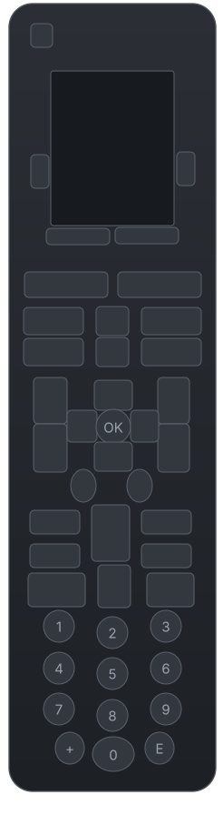

Account
The password goes to the system keychain. Never to a file in the project.
Logitech session
These three buttons are the only ones in the whole app that touch your Logitech account, and even they only sign in and out. Nothing here creates, changes or deletes anything on Logitech's side: searching for a device only reads the public catalog. "Forget password" erases it from this computer's keychain -- your Logitech account itself stays exactly as it is.
Signing in is not available in this build: the client that talks to the account service is not installed, so there is nothing this screen could do with a password. It is not asked for.
Everything that does not need an account still works,
and that is most of the app: reading the remote, importing a
.ir file (Flipper Zero / IRDB) from the Learn screen,
building a device out of it, editing keys and activities, generating the
blob and writing it. The Catalog screen is the only other one that
needs the account, and it says so on its own.
Show technical details
Catalog
This is where the devices you later add to the control come from. Searching and saving is read-only against Logitech's public catalog: nothing is created or deleted in your account.
Search the catalog
Downloaded, waiting for a protocol
These came down from Logitech's catalog but could
not be saved as devices, so they are not in the list to send
to the remote. The catalog brings each button's payload but never the
protocol's timings -- those have to be on this computer already.
Nothing here was lost: import an .ir of the same family once
(below) and press Resume.
Import an .ir file
For a device the catalog doesn't have, or whose
protocol isn't on disk yet. An .ir file from a Flipper Zero
(or from the public IRDB) carries the waveform measured in microseconds, which is
exactly what the control needs. It doesn't use the internet or your account.
Ready to add to the control
Everything downloaded or imported on this computer. The ones marked Ready have the commands and their protocol's timing definition, so they show up in the Control dropdown; the ones marked Not usable yet say what they are missing. The commands are recounted straight from the file itself, not from the summary written inside it.
Control
Add a TV or another device to your Harmony One.
What your control has now
Add a device
There's no device ready to add yet. You get one two ways, both on
the Catalog tab, and neither touches your account: search for it
in the public catalog, or import an .ir file for the device.
Show details
Activities
An activity is a button that turns on several devices together and sets them to the right input. Here you can see which device each one uses -- read from your control's configuration, not guessed -- and it can be changed.
How activities work here
Create a new activity
How it's determined which device each activity uses
Show details
Keys
What each button on your control does today, and how to change it. Tap a button in the photo, choose the device, and what you want it to do.

Standard keys, device by device
When you add a device this happens on its own. This is where you fix one that is already on the control.
Selected button
Unapplied changes
How many keys can be changed, and why the others can't
Show details
History
What's on the control, when it was recorded, and what to roll back with.
Regression anchor
The file that's currently recorded and verified on your control. Regenerating it from scratch has to produce, byte for byte, that exact same file.
Recordings
Learn
Register a device that is NOT in Logitech's catalog, using the IR receiver the Harmony One itself has at the top: point the original remote at it, press the button, and the remote returns the waveform.
1. The device
The name is validated against the hardware as you type
it: there has to be a font that DRAWS each letter, and the control has to
know how to WRITE it. The device can't draw Q,
X, or Z.
Checked against the configuration your control has today:
2. The commands
Test bench
Without the remote plugged in there's no way to capture anything. This replaces the capture with a REAL waveform already recorded on the device (one it already had), so you can go through the whole screen and see that recognition and comparison do what they claim. It's not a capture: any command learned this way stays flagged, and the summary repeats that before saving.
3. Save
It's saved in the same format and the same folder as a device downloaded from the catalog, so the rest of the app treats it exactly the same way. From there it is the same as any other device: go to Control, choose it, apply it, and the button that writes to your remote only appears once everything checks out.